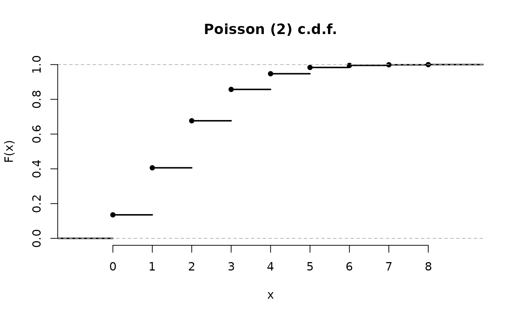
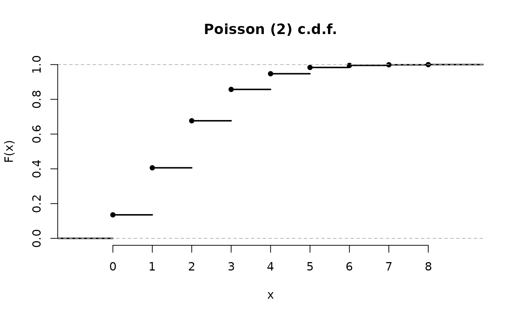

Plot method for an object inheriting from class "distribution".
By default the probability density function (p.d.f.), for a continuous
variable, or the probability mass function (p.m.f.), for a discrete
variable, is plotted. The cumulative distribution function (c.d.f.)
will be plotted if cdf = TRUE. Multiple functions are included
in the plot if any of the parameter vectors in x has length greater
than 1. See the argument all.
Arguments
- x
an object of class
c("name", "distribution"), where"name"is the name of the distribution.- cdf
A logical scalar. If
cdf = TRUEthen the cumulative distribution function (c.d.f.) is plotted. Otherwise, the probability density function (p.d.f.), for a continuous variable, or the probability mass function (p.m.f.), for a discrete variable, is plotted.- p
A numeric vector. If
xlimis not passed in...thenpis the fallback option for setting the range of values over which the p.m.f, p.d.f. or c.d.f is plotted. See Details.- len
An integer scalar. If
xis a continuous distribution object thenlenis the number of values at which the p.d.f or c.d.f. is evaluated to produce the plot. The largerlenis the smoother is the curve.- all
A logical scalar. If
all = TRUEthen a separate distribution is plotted for all the combinations of parameter values present in the parameter vectors present inx. These combinations are generated usingexpand.grid. Ifall = FALSEthen the number of distributions plotted is equal to the maximum of the lengths of these parameter vectors, with shorter vectors recycled to this length if necessary usingrep_len.- legend_args
A list of arguments to be passed to
legend. In particular, the argumentx(perhaps in conjunction withlegend_args$y) can be used to set the position of the legend. Iflegend_args$xis not supplied then"bottomright"is used ifcdf = TRUEand"topright"ifcdf = FALSE.- ...
Further arguments to be passed to
plot,plot.ecdfandlines, such asxlim, ylim, xlab, ylab, main, lwd, lty, col, pch.
Value
An object with the same class as x, in which the parameter
vectors have been expanded to contain a parameter combination for each
function plotted.
Details
If xlim is passed in ... then this determines the
range of values of the variable to be plotted on the horizontal axis.
If x is a discrete distribution object then the values for which
the p.m.f. or c.d.f. is plotted is the smallest set of consecutive
integers that contains both components of xlim. Otherwise,
xlim is used directly.
If xlim is not passed in ... then the range of values spans
the support of the distribution, with the following proviso: if the
lower (upper) endpoint of the distribution is -Inf (Inf)
then the lower (upper) limit of the plotting range is set to the
p[1]\
If the name of x is a single upper case letter then that name is
used to labels the axes of the plot. Otherwise, x and
P(X = x) or f(x) are used.
A legend is included only if at least one of the parameter vectors in
x has length greater than 1.
Plots of c.d.f.s are produced using calls to
approxfun and plot.ecdf.
Examples
B <- Binomial(20, 0.7)
plot(B)
plot(B, cdf = TRUE)
B2 <- Binomial(20, c(0.1, 0.5, 0.9))
plot(B2, legend_args = list(x = "top"))
x <- plot(B2, cdf = TRUE)
 x$size
#> [1] 20 20 20
x$p
#> [1] 0.1 0.5 0.9
X <- Poisson(2)
plot(X)
x$size
#> [1] 20 20 20
x$p
#> [1] 0.1 0.5 0.9
X <- Poisson(2)
plot(X)
 plot(X, cdf = TRUE)

G <- Gamma(c(1, 3), 1:2)
plot(G)
plot(X, cdf = TRUE)

G <- Gamma(c(1, 3), 1:2)
plot(G)
 plot(G, all = TRUE)
plot(G, cdf = TRUE)
plot(G, all = TRUE)
plot(G, cdf = TRUE)
 C <- Cauchy()
plot(C, p = c(1, 99), len = 10000)
C <- Cauchy()
plot(C, p = c(1, 99), len = 10000)
 plot(C, cdf = TRUE, p = c(1, 99))
plot(C, cdf = TRUE, p = c(1, 99))